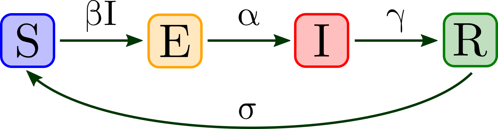

The plot below shows the number of
Susceptible
,
Exposed
,
Infectious
, and
Resistant
individuals over time (in days) as percentages of the entire population.
Equations
Parameters
R
0
:
1.2
1.4
1.6
1.8
2.0
2.5
3.0
4.0
5.0
10.0
Latent period \(\left(\frac{1}{\alpha}\right)\):
½ day
1 day
2 days
4 days
1 week
2 weeks
Infectious period \(\left(\frac{1}{\gamma}\right)\):
½ day
1 day
2 days
4 days
Duration of resistance \(\left(\frac{1}{\sigma}\right)\):
1 week
1 month
6 months
1 year
Permanent
Initial susceptibility \(\left(S(t=0)\right)\):
25%
50%
75%
90%
100%